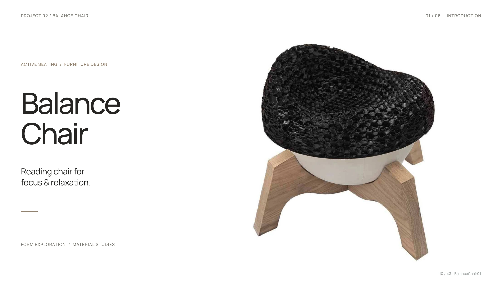
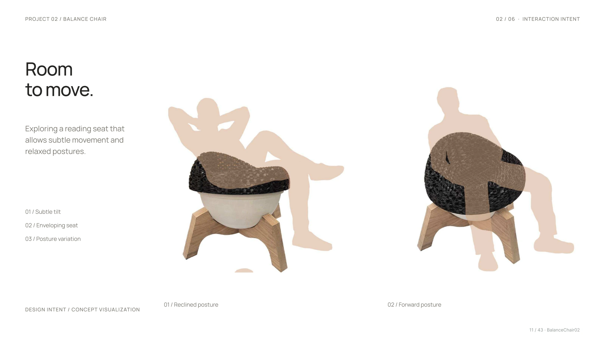
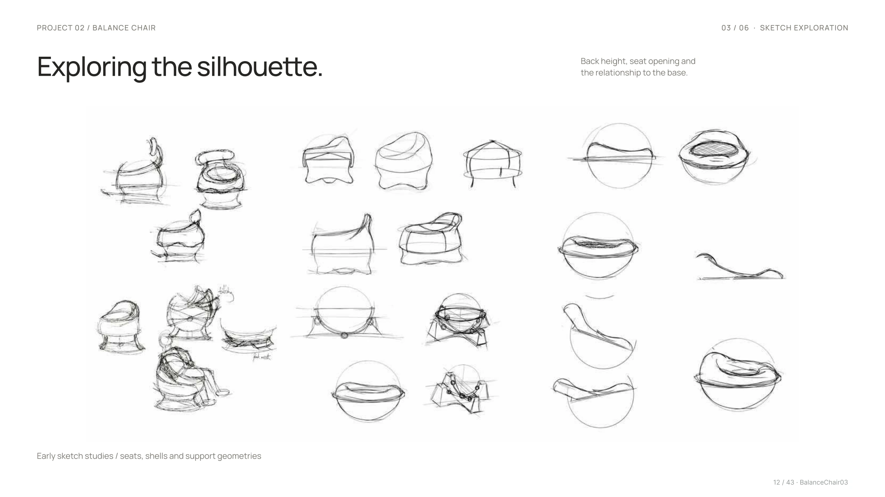
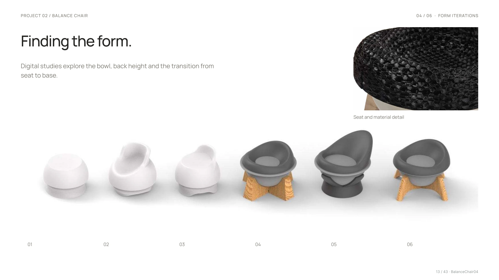
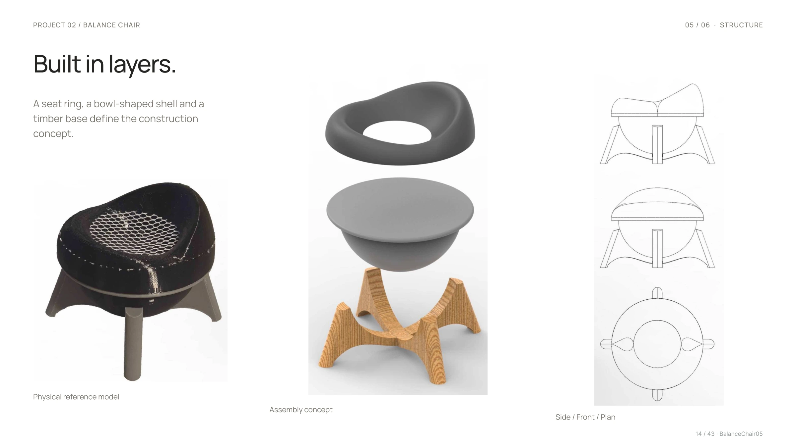
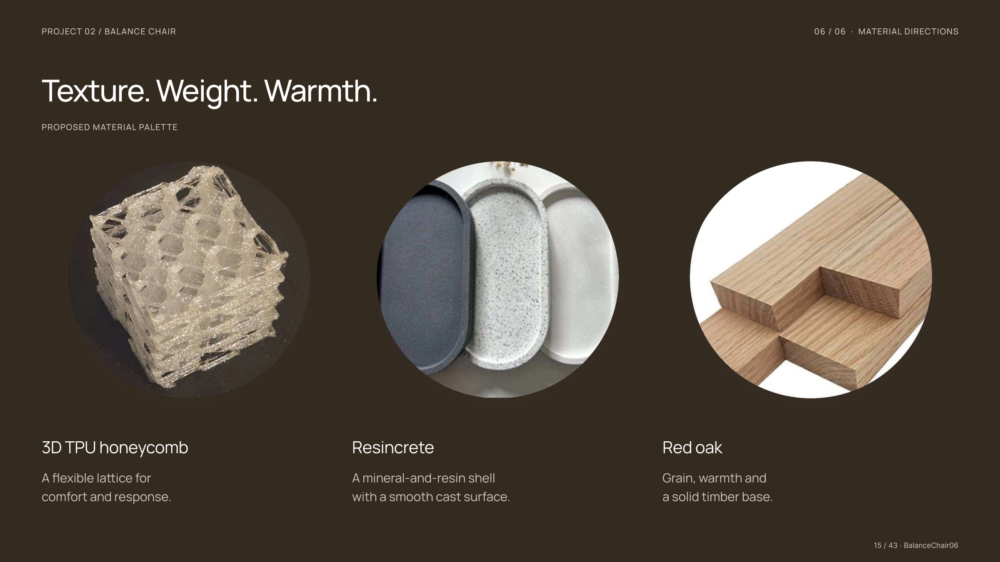

All work
Balance Chair
Balance Chair explores a reading seat that allows subtle movement and relaxed postures. The project follows silhouette sketches, digital form studies, and a layered construction concept, with a proposed material palette of a flexible TPU honeycomb seat, Resincrete shell, and red oak base.
View full process




